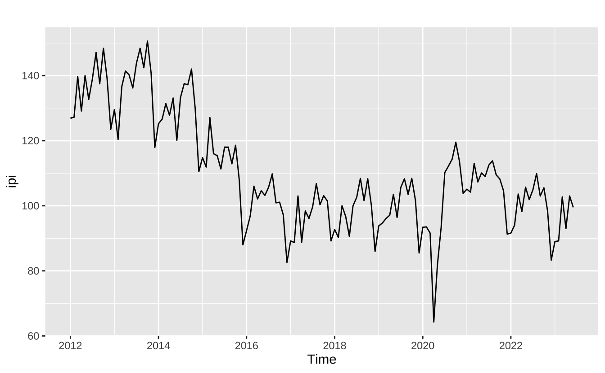
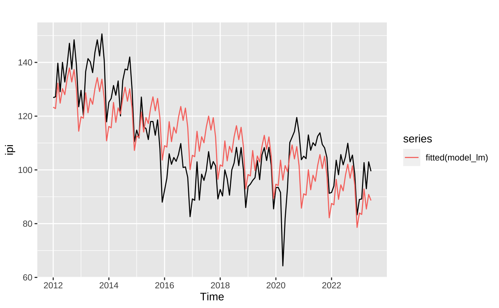
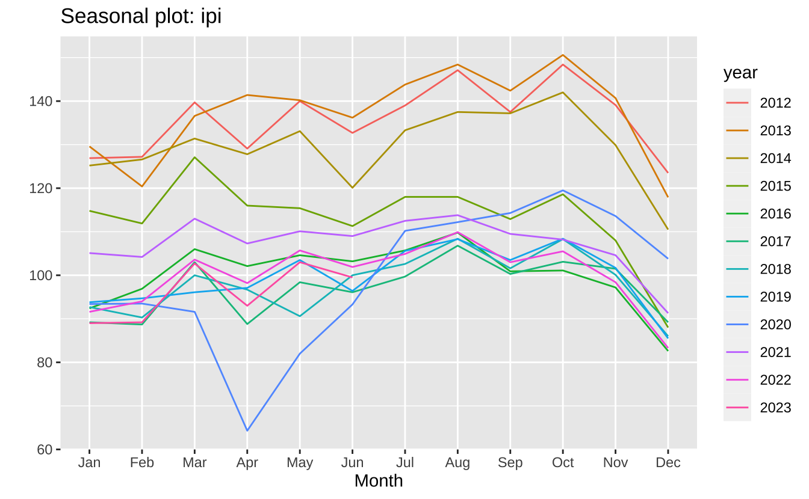
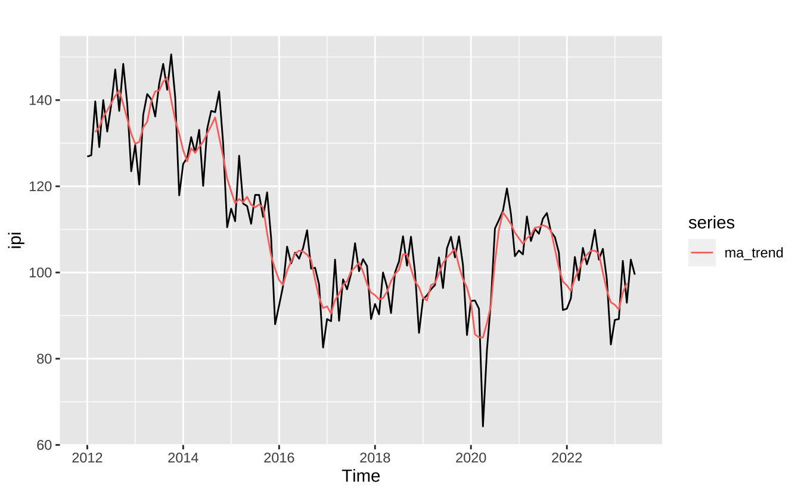
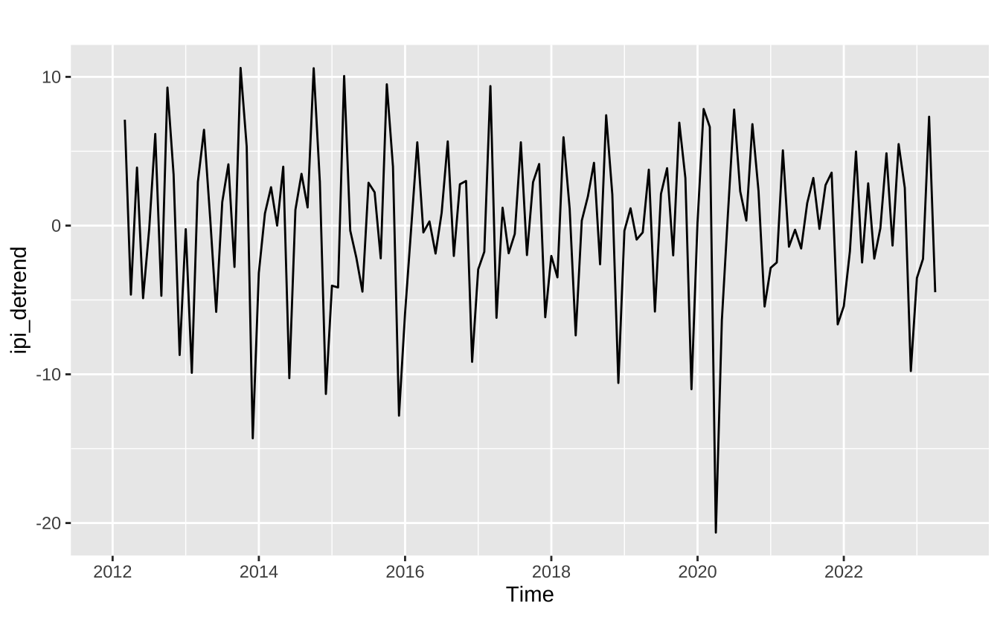
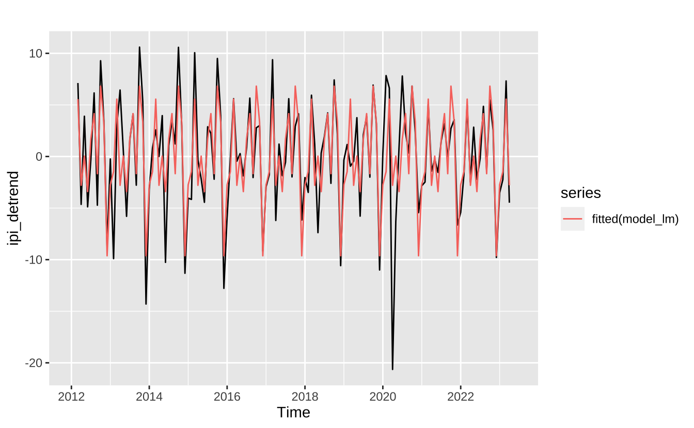
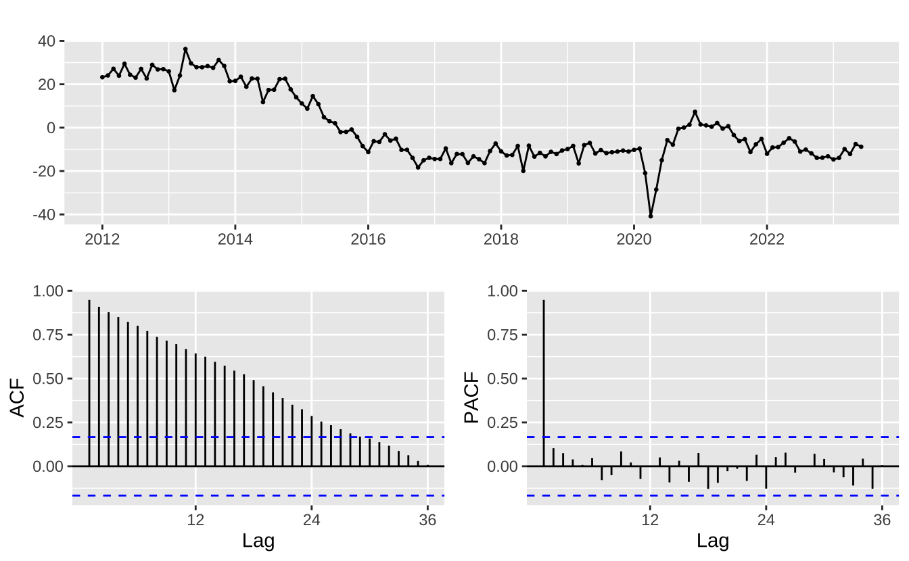

#> IPI - Construção Civil (sem ajuste sazonal)
ipicc <- rbcb::get_series(21868)
#> Consumo mensal de energia elétrica - Residencial
df_energia <- rbcb::get_series(1403)
#> Car accidents in São Paulo
accidents <- read_csv("...")
#> Demanda mensal por gasolina
gasolina <- read_csv("...")
#> Demanda mensal EMTU
emtu <- read_csv("...")Sazonalidade
Sazonalidade Clássica
A forma “clássica” de se modelar sazonalidade numa série é decompondo ela em três componentes: tendência, sazonalidade, e ruído. Didaticamente, temos:
\[ y_{t} = T_{t} + S_{t} + u_{t} \]
Em geral, a tendência \(T_{t}\) é um polinômio, de primeiro ou segundo grau1, que depende do tempo ou uma média móvel simples. Já a sazonalidade, \(S_{t}\) entra linearmente no modelo: coloca-se uma variável binária (dummy) para cada período sazonal. No caso de uma série com sazonalidade mensal, isto significa incluir onze variáveris binárias2. O caso de uma tendência linear com sazonalidade “determinística”3 é expresso na equação abaixo.
\[ y_{t} = \alpha_{0} + \alpha_{1}t + \sum_{i = 1}^{11}\beta_{i}\delta_{i} + u_{t} \]
Neste tipo de regressão o “período-base” fica incorporado no termo de constante. Isto é, imaginando que temos uma série mensal e que janeiro seja o mês-base, o efeito de janeiro ficaria estimado junto com _{0} e os demais
df_to_ts <- function(df, date_col = NULL, value_col = NULL, freq = "M") {
if (is.null(date_col)) {date_col = colnames(df)[1]}
if (is.null(value_col)) {value_col = colnames(df)[2]}
#> Select columns and remove missing values
df = na.omit(dplyr::select(df, c(date_col, value_col)))
#> Get dates and check class
dates = df[[date_col]]
if (!inherits(dates, "Date")) {
stop("Invalid date column selected.")
}
#> Check frequency argument
stopifnot(any(freq %in% c("M", "T", "Q")))
frequency = ifelse(freq == "M", 12, 4)
#> Get the starting date
date_min = min(dates)
#> Convert into a numeric vector
mes = lubridate::month(date_min)
ano = lubridate::year(date_min)
start = c(ano, mes)
#> Get the values of the series
values = as.numeric(df[[value_col]])
#> Convert to ts
y = stats::ts(values, start = start, frequency = frequency)
return(y)
}ipi <- df_to_ts(ipicc)
autoplot(ipi)
model_lm <- tslm(ipi ~ trend + season)
broom::tidy(summary(model_lm))# A tibble: 13 × 5
term estimate std.error statistic p.value
<chr> <dbl> <dbl> <dbl> <dbl>
1 (Intercept) 124. 3.61 34.2 2.53e-65
2 trend -0.298 0.0240 -12.4 1.27e-23
3 season2 -0.210 4.58 -0.0459 9.63e- 1
4 season3 9.52 4.58 2.08 3.96e- 2
5 season4 2.40 4.58 0.525 6.01e- 1
6 season5 8.10 4.58 1.77 7.92e- 2
7 season6 6.16 4.58 1.34 1.81e- 1
8 season7 12.3 4.68 2.63 9.70e- 3
9 season8 16.7 4.68 3.56 5.20e- 4
10 season9 11.8 4.68 2.52 1.31e- 2
11 season10 16.7 4.68 3.56 5.19e- 4
12 season11 9.81 4.68 2.09 3.82e- 2
13 season12 -5.64 4.68 -1.20 2.31e- 1autoplot(ipi) +
autolayer(fitted(model_lm))
ggseasonplot(ipi)
ma_trend <- stats::filter(ipi, filter = rep(1/5, 5), method = "convolution")
autoplot(ipi) +
autolayer(ma_trend)
ipi_detrend <- ipi - ma_trend
autoplot(ipi_detrend)
model_lm <- tslm(ipi_detrend ~ season)
autoplot(ipi_detrend) +
autolayer(fitted(model_lm))
model_lm <- tslm(ipi ~ season)
anova(model_lm)Analysis of Variance Table
Response: ipi
Df Sum Sq Mean Sq F value Pr(>F)
season 11 6233 566.66 2.0295 0.03067 *
Residuals 126 35180 279.21
---
Signif. codes: 0 '***' 0.001 '**' 0.01 '*' 0.05 '.' 0.1 ' ' 1forecast::ggtsdisplay(resid(model_lm))
X13-ARIMA
library(seasonal)sipi = seas(ipi)
summary(sipi)
Call:
seas(x = ipi)
Coefficients:
Estimate Std. Error z value Pr(>|z|)
Leap Year 0.70176 1.40841 0.498 0.6183
Weekday 0.39172 0.05366 7.300 2.87e-13 ***
Easter[1] -3.07685 0.78925 -3.898 9.68e-05 ***
AO2013.Feb -9.32322 2.14649 -4.343 1.40e-05 ***
AO2014.Jun -7.96583 2.03547 -3.914 9.10e-05 ***
AO2018.May -12.45936 2.03317 -6.128 8.90e-10 ***
LS2020.Mar -10.81237 2.75090 -3.930 8.48e-05 ***
AO2020.Apr -23.63610 2.24940 -10.508 < 2e-16 ***
AO2020.May -10.79168 2.25698 -4.781 1.74e-06 ***
LS2020.Jul 12.60947 2.58399 4.880 1.06e-06 ***
MA-Nonseasonal-01 0.21318 0.08445 2.524 0.0116 *
MA-Seasonal-12 0.73913 0.06387 11.573 < 2e-16 ***
---
Signif. codes: 0 '***' 0.001 '**' 0.01 '*' 0.05 '.' 0.1 ' ' 1
SEATS adj. ARIMA: (0 1 1)(0 1 1) Obs.: 138 Transform: none
AICc: 645.6, BIC: 679.1 QS (no seasonality in final): 0
Box-Ljung (no autocorr.): 29.7 Shapiro (normality): 0.9821 .Footnotes
Pode-se usar um polinômio de qualquer grau, mas polinômios de ordens muito elevadas costumam se ajustar “perfeitamente” aos dados e vão absorver toda a sazonalidade da série.↩︎
Sempre coloca-se uma variável binária a menos do que períodos sazonais pela questão do posto da matriz de regressores. Na prática, se houvesse uma dummy para cada período sazonal a matriz de regressão seria uma matriz identidade.↩︎
É comum ver esta expressão nos textos de séries de tempo; em geral o termo é utilizado em contraste com modelos SARIMA onde a sazonalidade é estocástica, mas o termo “determinístico” não tem implicação causal. Na prática, quer dizer que a sazonalidade não varia no tempo e é sempre a mesma o que pode gerar previsões ruins a depender do caso.↩︎